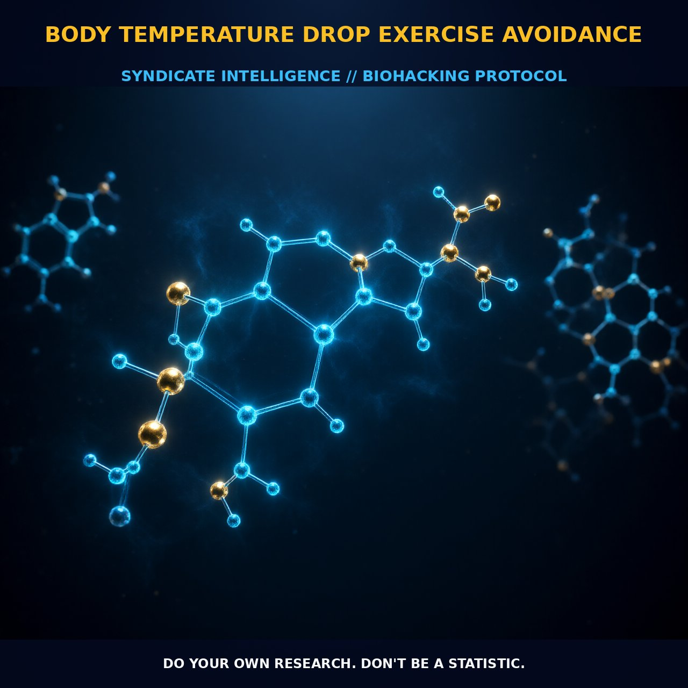

Optimizing Thermoregulation During Exercise

1. The Mechanism
Body temperature drop exercise avoidance involves a strategic approach to minimizing the drop in core body temperature during physical activity. This phenomenon is particularly relevant for biohackers and nootropic users who aim to maintain optimal cognitive and physical performance. The key mechanism lies in the body's thermoregulation during exercise, where physical activity causes an increase in metabolic heat production. This heat is dissipated primarily through sweating and vasodilation, leading to a drop in core body temperature.
The drop in body temperature can impact muscle efficiency, cognitive function, and overall endurance. By understanding and mitigating this drop, individuals can sustain their performance levels over longer periods. The body's thermoregulation is intricately linked to the sympathetic and parasympathetic nervous systems. During exercise, the sympathetic nervous system is activated to facilitate heat dissipation, while the parasympathetic system helps maintain homeostasis.
Key hormones such as epinephrine and norepinephrine play a role in regulating blood flow and sweating to manage body temperature. Additionally, the hypothalamus acts as a central regulator, coordinating the body’s response to thermal changes. By understanding these mechanisms, biohackers can develop strategies to mitigate the temperature drop and enhance their performance during physical activities.
2. Biological Leverage
One of the primary biological systems involved in body temperature regulation during exercise is the hypothalamus, which acts as the body's thermostat. The hypothalamus senses changes in core body temperature and triggers responses such as sweating and vasodilation to maintain homeostasis. During exercise, the body’s core temperature can rise, leading to increased blood flow to the skin and sweating to dissipate heat. However, this process can also result in a drop in core body temperature, which can be detrimental to performance if not managed properly.
Another critical system involved is the autonomic nervous system, which plays a crucial role in thermoregulation. The sympathetic branch, in particular, is activated during exercise to increase heart rate, blood pressure, and sweating. This activation helps to dissipate heat and maintain body temperature. Conversely, the parasympathetic branch helps to restore homeostasis after exercise. Biohackers can leverage these systems by using techniques such as gradual acclimatization to heat, wearing appropriate clothing, and using cooling strategies to maintain optimal body temperature.
3. Tactical Implementation
To avoid body temperature drop during exercise, biohackers can employ several tactical strategies. One effective approach is to gradually acclimate the body to high temperatures through regular exposure to heat, which can improve the body's thermoregulatory efficiency. Additionally, wearing lightweight, breathable clothing can help in dissipating heat more effectively while minimizing the drop in core body temperature.
Using cooling devices such as vests or neck wraps filled with cold gel packs can also provide immediate relief and help maintain optimal body temperature. Another practical approach is to time exercise sessions in cooler parts of the day, such as early morning or late evening, when the ambient temperature is lower. This can help reduce the overall thermal load on the body and minimize the temperature drop during exercise.
Incorporating hydration and electrolyte replenishment strategies can support the body's thermoregulatory processes, ensuring that the necessary fluids and minerals are available for sweating and vasodilation.
Prostar Life Hack
Gradually acclimate your body to high temperatures through regular exposure to heat and wear lightweight, breathable clothing to maintain optimal body temperature during exercise.
[ AUTHOR: LEAD TECHNICAL RESEARCHER ]